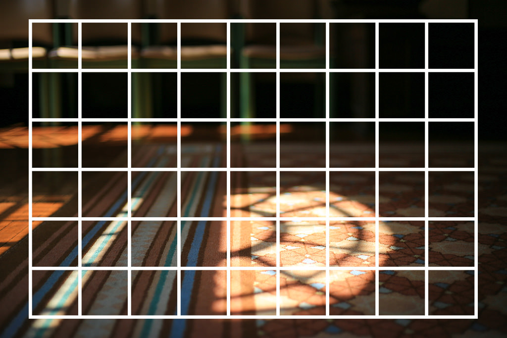
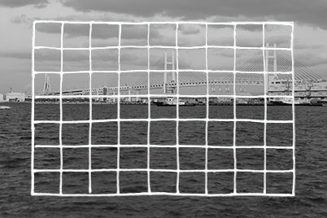
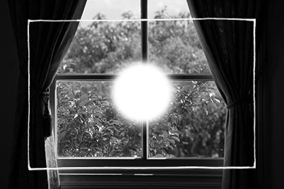
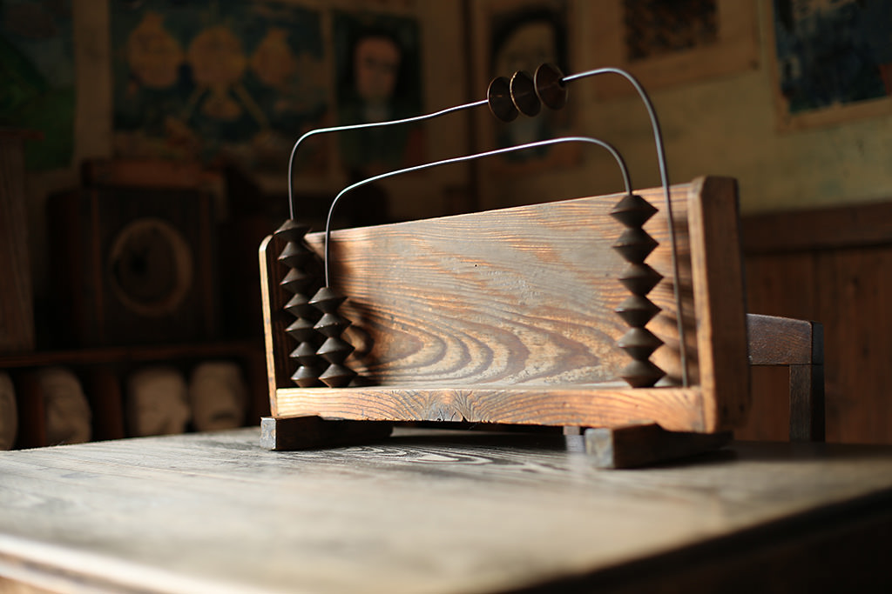
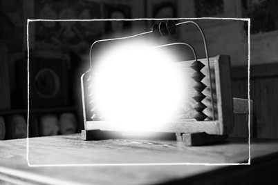
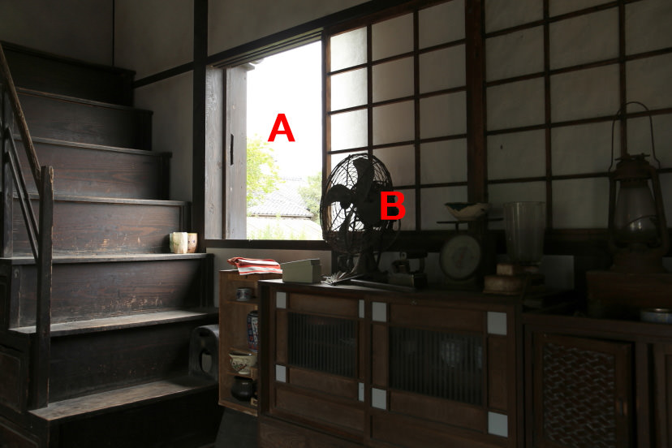
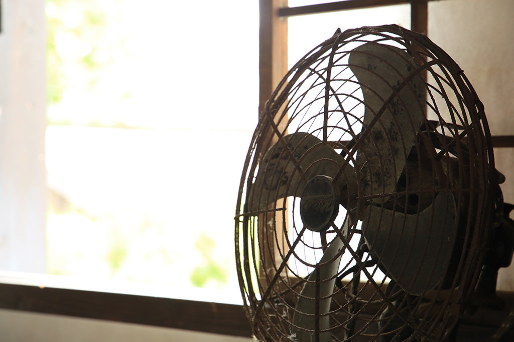
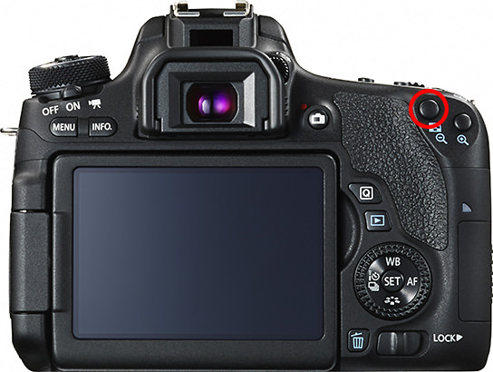

Photography Basic | Part 5
Metering
The metering function measures the brightness of a subject and decides how much exposure is best for the photo. Let’s take a look at each metering mode available, and get a better idea of which of them to use is best to use under which conditions/scene.

Evaluative metering
Benefits: Versatile; seldom gives the wrong exposure.
Drawbacks: Doesn’t work well for scenes where one area differs greatly in brightness level from the rest.
EOS 5D Mark III/ EF24-105mm f/4L IS USM/ FL: 88mm/ Shutter-priority AE (f/11, 1/4 sec, EV+0.3)/ ISO 100/ WB: Auto
In evaluative metering, the camera breaks the image frame down into a number of different zones, measures the amount of light in each zone, and then analyses the findings to determine the optimal exposure.
Evaluative metering
Benefits: Handles scenes with stark differences in brightness level well.
Drawbacks: Metering is carried out only in a very small area, so any mistakes in selecting this area could easily lead to incorrect exposure for the entire image.
EOS 60D/ EF-S18-135mm f/3.5-5.6 IS/ FL: 135mm (216mm equivalent)/ Aperture-priority AE (f/5.6, 1/250 sec, EV-0.3)/ ISO 100/ WB: Daylight
Spot metering can only measure light in an extremely limited area in the centre of the image frame. However, it’s the best mode to use for scenes with areas that differ greatly in brightness level, such as backlit scenes.
Centre-weighted metering
Benefits: Prioritizes the centre area, but in the process ensures that the rest of the image is properly exposed.
Drawbacks: Not effective for small subjects.
EOS 5D Mark III/ EF50mm f/1.4 USM/ FL: 50mm/ Aperture-priority AE (f/2, 1/60 sec, EV±0)/ ISO 100/ WB: Daylight
Centre-weighted metering measures the light across the entire image, but focuses mainly on the centre area. The exposure of the entire image depends on the subjects in and around the centre of the frame.
Link this to the idea of “metering”
Keyword: AE Lock
When you press the AE lock button, it “locks” the exposure settings so that the aperture and/or shutter speed settings won’t change even if you were to shift or adjust your image composition, refocus and shoot. You can use it if there is a large difference in brightness level between major elements in your picture, or if you are unable to obtain the exposure you want.
AE Lock is a very convenient function to use especially in combination with spot metering, and particularly for backlit scenes. For example, if you have a backlit scene where the main subject appears dark, all you need to do is to align the centre AF frame with the subject, half-press the shutter button, and then press the AE lock button, and the exposure settings will be locked to the correct exposure for the area that you want to capture properly.
EOS 5D Mark III/ EF24-105mm f/3.5-5.6 IS STM/ FL: 32mm/ Aperture-priority AE (f/6.3, 1/40 sec, EV+0.3)/ ISO 160/ WB: Manual
A scene with very bright and very dark areas. Depending on which area you want to achieve correct exposure for, carry out spot metering on either Position A or B.
Position A: For correct exposure in the bright areas, use AE lock on the scenery outdoors
As spot metering was carried out on the bright scenery outside the window, the fan in front has become black.
EOS 5D Mark III/ EF24-105mm f/3.5-5.6 IS STM/ FL: 105mm/ Aperture-priority AE (f/6.3, 1/125 sec, EV+0.3)/ ISO 250/ WB: Daylight
Position B: For correct exposure for the dark areas, use AE lock on the fan
As spot metering was carried out using the fan, the scenery outdoors is overexposed and blown out.
EOS 5D Mark III/ EF24-105mm f/3.5-5.6 IS STM/ FL: 105mm/ Aperture-priority AE (f/8, 1/125 sec, EV+0.3)/ ISO 2500/ WB: Daylight
How to use AE Lock
After you have half-pressed the shutter button and established focus, press the AE lock button (circled in red). When you want to resume metering, press the AE lock button again.